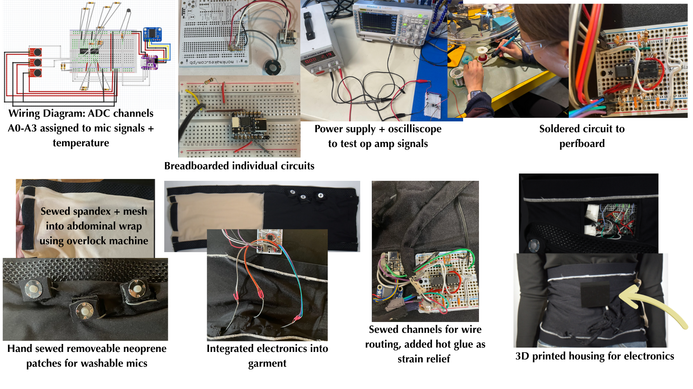
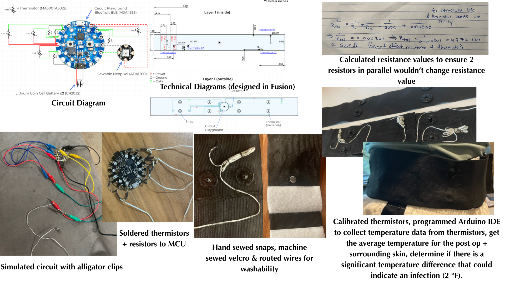
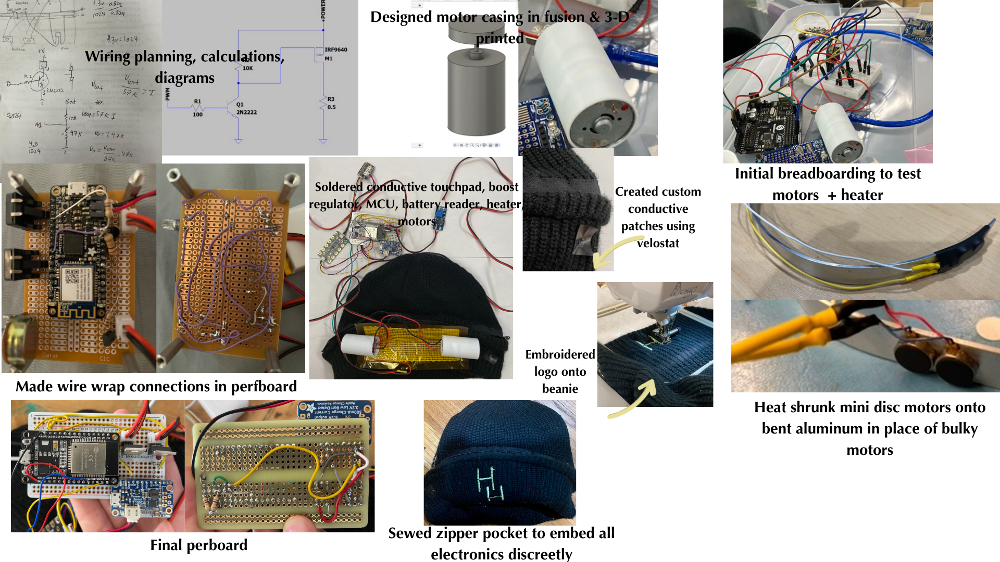
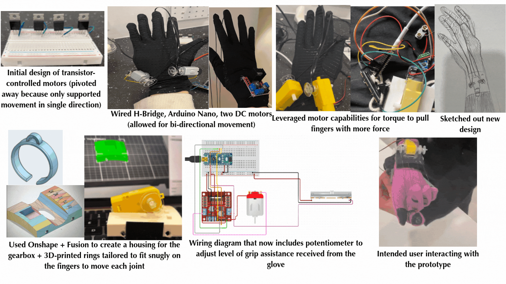
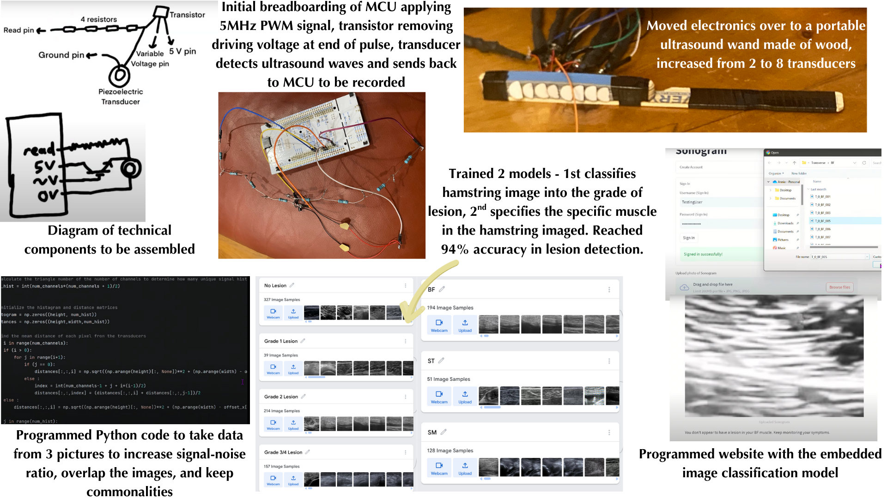
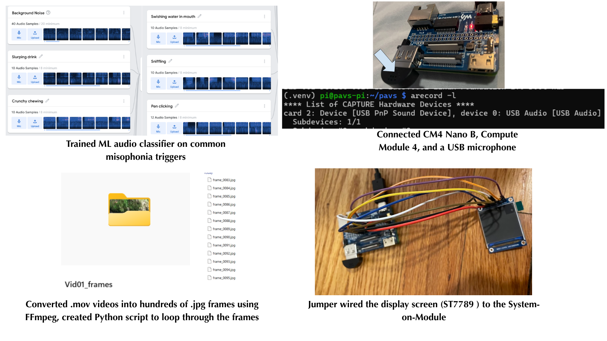

Annie Katz's Engineering Portfolio
I design assistive healthcare devices inspired by real needs experienced by my family, classmates, and myself. I independently lead engineering projects that integrate sensors, embedded systems, and hardware to support rehabilitation, diagnostics, and sensory health.
Role: Lead Engineer (Independent Project)
1) Problem / Motivation: There is no accessible way to monitor gut motility during daily life, even though irregular gut rhythms are linked to digestive disease and disrupted circadian timing.
2) What I Built: A reusable abdominal band with three contact microphones and a thermistor connected to an ESP32-S3 for overnight biosignal logging.
3) Technical Challenges: Motion noise during sleep, reproducible sensor placement, and long-wear comfort.
4) Intended Impact: Enables early detection of abnormal gut rhythms and supports circadian research.
Role: Lead Engineer (Independent Project)
1) Problem / Motivation: Families often miss early signs of infection at home, leading to delayed care.
2) What I Built: A wearable with multimodal sensor input paired with an early machine-learning classifier.
3) Technical Challenges: Sensor calibration and reliable temperature–pressure coupling.
4) Intended Impact: Provides earlier alerts before symptoms escalate.
Demo
Role: Lead Electrical Engineer (Team Project)
1) Problem / Motivation: Teens often avoid medications for chronic headaches and need discreet relief tools.
2) What I Built: Sensor and conductive textile layer with heat + vibration systems controlled through a mobile app.
3) Technical Challenges: Maintaining even heat distribution and isolating textile resistance.
4) Intended Impact: Drug-free migraine relief that works anywhere.
Pitch + Demo
Role: Lead Engineer (Independent Project)
1) Problem / Motivation: My sister has dyspraxia and struggled with commercial grip trainers.
2) What I Built: A redesigned, low-friction load-cell trainer with smoother rails and ergonomic handles.
3) Technical Challenges: Reducing rail friction to stabilize force measurements.
4) Intended Impact: Makes therapy intuitive and fun for young users.

Explanation + Showcase
Judge Q&A
Role: Lead Engineer (Independent Project)
1) Purpose: First prototype built for helping my sister build fine-motor strength.
2) Lesson Learned: Discovered that mechanical friction directly distorts sensor accuracy.
Project Explanation + Demo
Role: Lead Engineer (Independent Project)
1) Problem / Motivation: I re-tore my hamstring because I lacked imaging feedback during recovery.
2) What I Built: A low-cost ultrasound probe paired with a classifier to monitor muscle healing.
Initial Concept Submission
Why This Project Matters
Role: Lead Electrical Engineer (Team Project)
1) Problem / Motivation: Pressure sores under casts are missed because they are invisible.
2) What I Built: Sensor placement strategy and internal foam-sensor layering for early detection.

Role: Lead Engineer (Independent Project)
1) Purpose: Helps my younger brother cope with sudden triggering sounds.
2) Concept: Frequency-specific suppression wearable.
Role: Lead Electrical & Mixed-Media Designer
1) Theme: Based on the biblical narrative where Esav trades his birthright for Yaakov’s lentil stew.
2) What I Built: A booknook that uses an Arduino to control LEDs, servo-driven character movement, neopixel LED flame animation, character dialogue on an LCD screen, and audio narration triggered.
3) Components & Electronics: NeoPixel LED strip for a flickering fire effect, potentiometer-driven audio track control, servo motor for character movement, LCD for text dialogue, DFPlayer Mini for audio playback, and 3D-printed + laser-cut elements.
4) Artistic Integration: Painted interior scenery, custom felt curtains to mimic a tent, hand-painted wooden figures, 3D modeled stew pot, and laser-cut speech bubble.